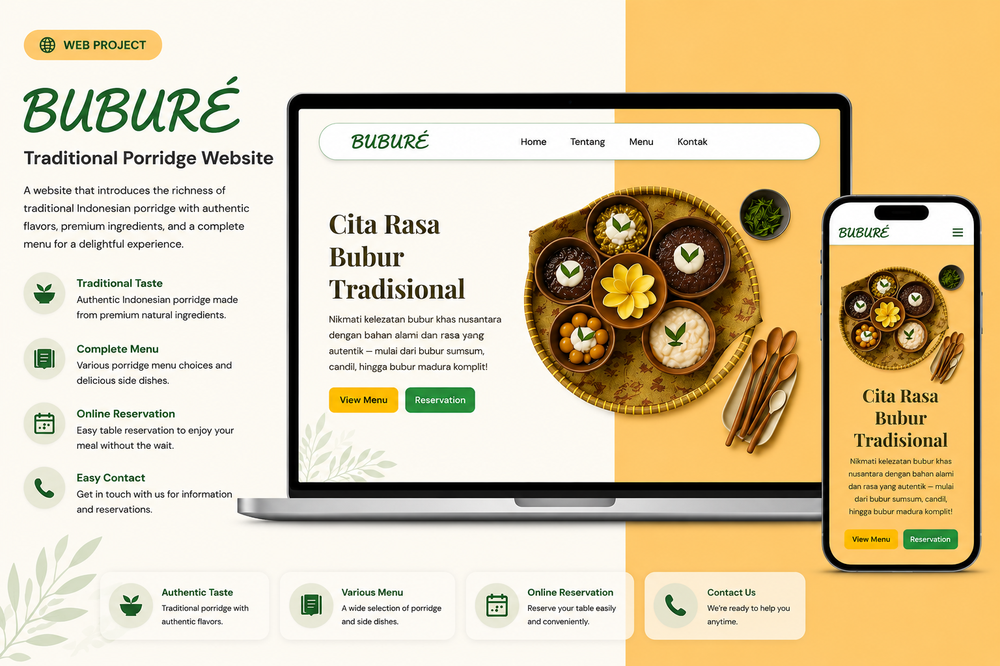

Documented regional porridge recipes from across Indonesia with historical context.
Step-by-step preparation instructions with portion calculators and ingredient checklists.
Fluid layout optimized for mobile screens with touch-friendly navigation.
Showcased 15+ regional varieties with interactive recipe cards. Received positive feedback for cultural preservation and responsive, fluid design.